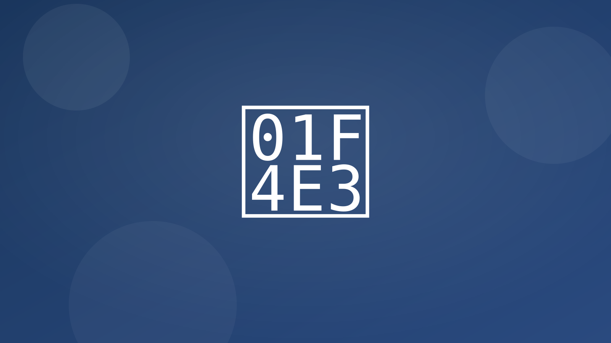
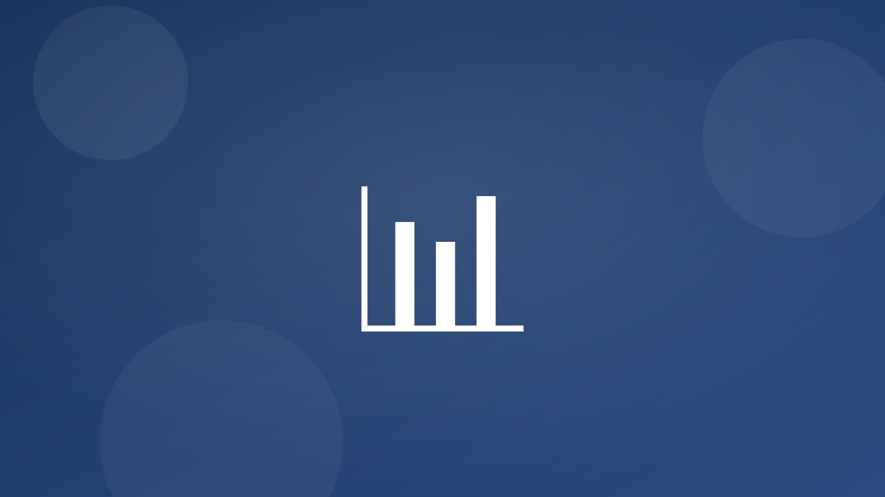

Segmentación, contenido y envíos automáticos basados en eventos.
- Cuidado post-compra Consejos de uso, venta cruzada de consumibles, recordatorios de servicio a 3/6/12 meses, con seguimiento de respuesta.
- Reactivación de clientes inactivos Detecta 90+ días sin actividad; envía oferta personalizada y pregunta de interés por WhatsApp/email.
- De reseña a redes sociales Las buenas reseñas se capturan y se programan para redes (con consentimiento), con plantillas por red.

Integraciones típicas
- Mailchimp/Sendgrid, WhatsApp Business
- Google My Business, Meta/LinkedIn
- CRM/Hoja para segmentos y actividad
KPIs esperados
- +10–25% repetición de compra
- Mejor CTR con contenido personalizado
- Más presencia en reseñas y redes